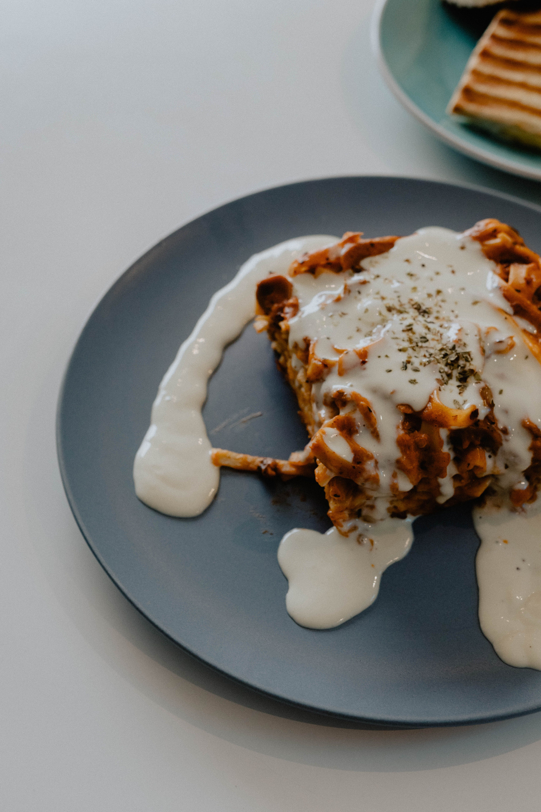

Lasagna

Description
This classic Italian Lasagna is the ultimate comfort food.It features layers of savory meta sauce made with ground beef and Italian sausage,rich ricotta cheese filling and gooey melted mozzarella, all tucked nearly between neatly tender sheets of pasta.
Ingredients
- 12 lasagna noodles (cooked according to package instructions)
- 1 lb sweet Italian sausage
- 3/4 lb lean ground beef
- 1/2 cup minced onion
- 2 cloves garlic, crushed
- 1 can (28 ounces) crushed tomatoes
- 2 cans (6 ounces each) tomato paste
- 2 tablespoons white sugar
- 1 1/2 teaspoons dried basil leaves
- 16 ounces ricotta cheese
- 1 egg
- 3/4 lb mozzarella cheese, sliced
- 3/4 cup grated Parmesan cheese
Steps
- In a large pot, cook the sausage, ground beef, onion, and garlic over medium heat until well browned. Stir in crushed tomatoes, tomato paste, sugar, and basil. Simmer for about 30 minutes, stirring occasionally.
- While the sauce simmers, bring a large pot of lightly salted water to a boil. Cook lasagna noodles in boiling water for 8 to 10 minutes. Drain noodles, and rinse with cold water.
- In a mixing bowl, combine the ricotta cheese with the egg and a pinch of salt. Mix well until smooth.
- Preheat your oven to 375°F (190°C).
- To assemble, spread 1 1/2 cups of meat sauce in the bottom of a 9x13-inch baking dish. Arrange 6 noodles lengthwise over the sauce. Spread one-half of the ricotta cheese mixture over the noodles. Top with a third of the mozzarella cheese slices.
- Spoon 1 1/2 cups of meat sauce over the mozzarella, and sprinkle with 1/4 cup Parmesan cheese. Repeat layers (noodles, ricotta, mozzarella, sauce, and Parmesan). Top with remaining mozzarella and Parmesan cheese.
- Cover with foil (make sure it doesn't touch the cheese) and bake in the preheated oven for 25 minutes. Remove foil, and bake an additional 25 minutes until the cheese is bubbly and golden-brown. Let rest for 15 minutes before serving.
Home